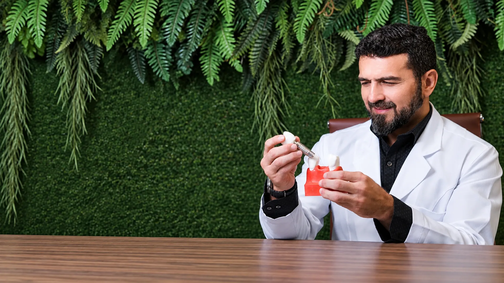
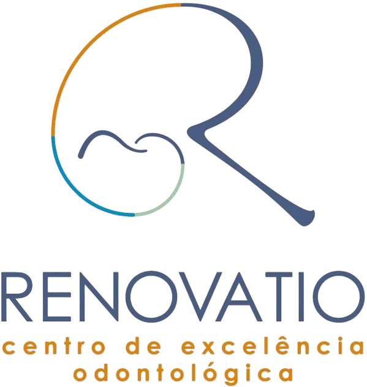
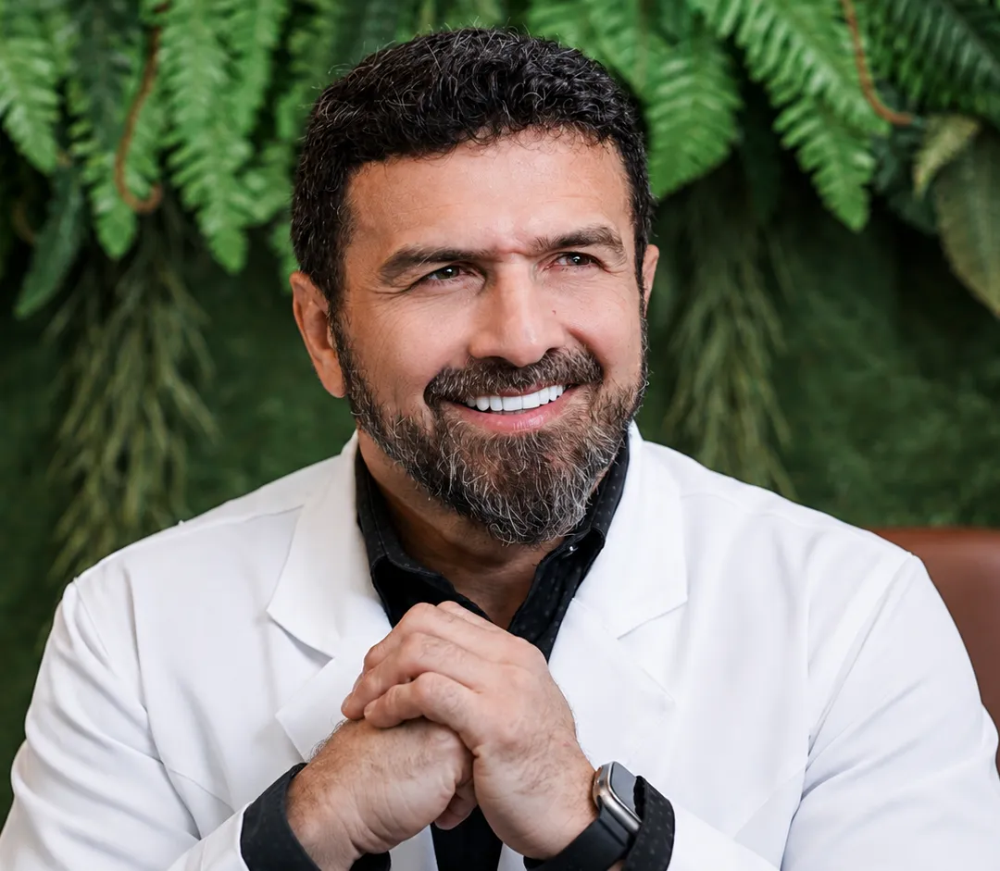

{{ tm.initials }}
{{ tm.name }}
"{{ tm.quote }}"


Implantodontia & Cirurgia Bucomaxilofacial
Implantodontia Cirurgia Bucomaxilofacial
Cada sorriso exige um cuidado único. A partir de uma avaliação detalhada, definimos o tratamento mais adequado para cada necessidade, de um único implante a reabilitações mais completas.
Agendar consultaO planejamento muda de acordo com cada necessidade. As possibilidades abaixo dependem de avaliação clínica e exames.
Cada indicação considera anatomia, histórico odontológico e objetivos do tratamento.
{{ r.desc }}
Um fluxo organizado para sair da primeira conversa com clareza sobre diagnóstico, possibilidades e próximos passos.
{{ st.desc }}
{{ st.desc }}

Formação profissional
Cirurgia, Implantodontia e planejamento de casos complexos.
Atuação em Cirurgia Bucomaxilofacial e Implantodontia, com abordagem voltada ao diagnóstico e planejamento individualizado — do implante unitário às reabilitações mais extensas.
Cada caso é analisado de forma independente, considerando anatomia, exames e histórico, antes da definição de qualquer estratégia cirúrgica ou reabilitadora.
{{ w.text }}
Relatos de pacientes que passaram por atendimento com o Dr. Phelype Maia.
{{ tm.name }}
"{{ tm.quote }}"
Se você perdeu um ou mais dentes, possui perda óssea ou deseja uma nova avaliação de um tratamento anterior, o primeiro passo é entender seu caso individualmente.
Agendar consultaRenovatio · Aldeota • Fortaleza/CE
Além da estética, o tratamento pode contribuir para conforto, segurança e função mastigatória quando bem indicado.
{{ b.desc }}
{{ f.a }}
Fale com nossa equipe pelo WhatsApp.
Agendar consultaAtendimento presencial na Aldeota, em prédio de fácil acesso para consultas, exames e procedimentos.
Comer, falar e sorrir sem pensar duas vezes é o que buscamos em cada plano de tratamento, construído a partir da sua avaliação individual.
Agendar consulta